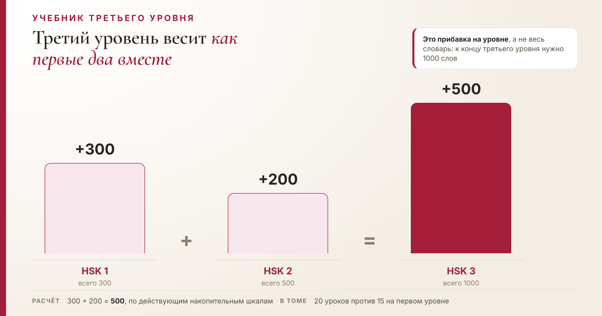
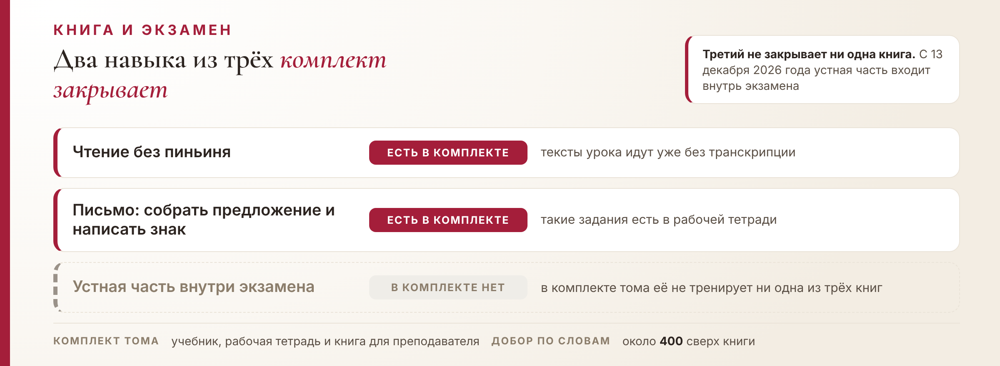

Экзамен
Учебник HSK 3: самый тяжёлый том из младших и чего в нём нет


Третий том проходят дольше двух предыдущих, и дело не в грамматике. На третьем уровне добавляется столько же слов, сколько на первых двух вместе — это видно, если сложить накопительные шкалы.
Разберём, сколько в книге уроков, сколько слов добирать сверх неё и почему к одной части экзамена комплект тома не готовит вовсе.
Короткий ответ: какой том и что в нём есть
Нужен том 3 и рабочая тетрадь к нему. На младших уровнях том по-прежнему один на уровень; разделение на два тома начнётся выше.
Что в томе точно есть: 20 уроков — это число сошлось в нескольких описаниях. Чего про него не известно: сколько в нём новых слов; эту цифру подтвердить не удалось, и я не стану называть её наугад.
Устройство серии, состав комплекта и способы получить запись разобраны у нас в отдельных статьях. Здесь — про то, что отличает именно третий уровень.
Третий уровень весит как первые два вместе
Это главная причина, по которой планы на третий том не сбываются.
| Уровень | Прибавка, прежняя шкала | Прибавка, действующая | Всего к концу уровня |
|---|---|---|---|
| HSK 1 | +150 | +300 | 300 |
| HSK 2 | +150 | +200 | 500 |
| HSK 3 | +300 | +500 | 1000 |
Сложите две верхние строки действующей шкалы: 300 плюс 200 — это 500. Ровно столько добавляется на одном третьем уровне. Третий том по объёму словаря равен первым двум вместе взятым, и планировать его в те же сроки не получится.
Проверить это легко на себе: вспомните, сколько времени ушло на первый том, прибавьте время второго — примерно столько и займёт третий при том же темпе занятий.
Почему это неочевидно. Номер уровня растёт на единицу, книга выглядит такой же по толщине, цена примерно та же. Ничто в этих признаках не говорит, что работы стало вдвое больше.
Прежняя шкала была ровнее: там прибавки шли по сто пятьдесят, сто пятьдесят и триста. Нынешняя растёт быстрее, и первый серьёзный скачок приходится как раз на третий уровень.
Двадцать уроков вместо пятнадцати
Объём книги тоже вырос, хотя и не так резко.
В томе первого уровня 15 уроков, в томе третьего — 20. Это на 5 уроков больше. Если вы шли по уроку в неделю, добавьте к плану больше месяца только на эту разницу.
Сколько слов в уроке — считайте сами. Общего числа по тому нет, но оценка делается за двадцать минут: возьмите три урока из разных частей книги, сосчитайте в них новые слова и умножьте среднее на двадцать.
Разброс по изданиям тут тоже есть, но он меньше, чем кажется: оглавление в любом тираже устроено одинаково, и уроки пронумерованы.
Этот счёт нужен не ради точности, а чтобы понять, добирать ли слова параллельно урокам. Ответ почти всегда «да», и ниже видно почему.
Сколько слов добирать после тома
Расчёт тот же, что и на предыдущих уровнях, но числа крупнее.
Действующий словник к концу третьего уровня — 1000 слов, прежний был 600. Серия собрана под прежнюю шкалу, значит книга закрывает около 60 процентов уровня, а добрать остаётся примерно 400 слов.
И отметьте разницу со вторым уровнем: там добор был около двухсот слов, здесь — вдвое больше, при том же способе работы с книгой.
Четыреста слов — это не довесок. Это больше, чем весь словарь первого уровня, и набрать их «в конце, перед экзаменом» не выйдет. По десятку слов в неделю параллельно урокам — и к последнему уроку добор закрыт.
Как меняются требования от уровня к уровню, разобрано отдельно: как меняются требования к числу слов и знаков. Чем удерживать набранное — здесь: как запоминать иероглифы.
Что из экзамена книга закрывает
Теперь посмотрим на комплект со стороны экзамена, а не со стороны программы.

| Что проверяет экзамен | Есть в комплекте | Почему |
|---|---|---|
| Чтение без пиньиня | да | тексты урока идут уже без транскрипции |
| Письмо: собрать предложение и написать знак | да | такие задания есть в рабочей тетради |
| Устная часть внутри экзамена | нет | в комплекте тома её не тренирует ни одна из трёх книг |
Такая проверка полезнее, чем кажется. Учебник пишут под программу уровня, а экзамен проверяет навыки — это пересекающиеся, но не одинаковые вещи, и расхождение всегда стоит смотреть отдельно.
Две строки из трёх закрыты книгой, и это хороший результат для учебника. Третья не закрыта вовсе, и именно она на третьем уровне стала обязательной.
И ещё одно, что видно из таблицы: закрытое книгой закрыто хорошо. Претензия к комплекту не в качестве, а в том, что требования к уровню изменились после того, как серия была собрана.
Как я перестраиваю занятия на третьем уровне
Ученица перешла на третий уровень после двух закрытых и спросила, сколько займёт том: на втором ушло три месяца, значит и тут примерно столько же. План выглядел разумным.
Мы посчитали вместе. В томе двадцать уроков вместо пятнадцати, а слов на уровне добавляется в два с половиной раза больше, чем на предыдущем. Три месяца превращались в пять, и это при том же темпе занятий.
Она восприняла это тяжелее, чем сами цифры того стоили: казалось, что дело в ней и что второй уровень дался легко случайно. Дело не в ней — просто третий уровень устроен иначе.
Мы поменяли не темп, а порядок. Раньше она проходила урок целиком и шла дальше. Теперь каждый пятый урок мы отводили не на новое, а на возврат к четырём предыдущим: слова, тексты, задания тетради.
На бумаге это выглядит как потеря времени: двадцать уроков превращаются в двадцать пять занятий. На деле вышло быстрее — к концу тома ей не пришлось возвращаться к началу, потому что начало не забылось.
И отдельно мы добавили то, чего в книге нет вовсе. Раз в неделю она пересказывала текст урока вслух, своими словами, без опоры на страницу. Первые разы это были три предложения и долгие паузы.
Вывод, который я делаю: третий уровень не труднее по грамматике, он больше по объёму. Поэтому меняют не подход к уроку, а расписание: каждый пятый урок — повторение, и раз в неделю — говорение, которого комплект не даёт.
Устная часть: чего в комплекте нет
Это главное, что я хочу сказать этой статьёй.
Начиная с третьего уровня устная часть стала частью самого экзамена — с 13 декабря 2026 года. До этого говорение проверяли отдельным экзаменом в другой день, и сдавали его далеко не все.
Для первых двух уровней это ничем не грозило: даже если вы не говорили ни слова вслух, на письменном экзамене это не проверялось. С третьего уровня такой возможности больше нет.
А теперь посмотрите на комплект тома: учебник, рабочая тетрадь, книга для преподавателя. Говорения не тренирует ни одна из трёх. Тексты в учебнике читают, задания в тетради пишут, ключи лежат у преподавателя.
Разрыв получается такой: экзамен спрашивает речь, книга к ней не готовит, и заметно это становится на пробнике за месяц до даты — когда менять что-то поздно.
Отдельно скажу, чего делать не нужно: искать «учебник с говорением» вместо этого. Комплект серии остаётся основой — просто к нему добавляется работа, которой в книгах не предусмотрено.
Что делаю я. Добавляю одно действие в неделю: пересказ текста урока вслух своими словами, без опоры на страницу. Материал уже разобран, новых слов не нужно — нужна только привычка говорить связно.
Второе действие — слушать и повторять за записью, фразу за фразой, не глядя в текст. Это не то же самое, что пересказ: здесь тренируется не содержание, а само произнесение длинных фраз без запинок.
Подготовка к устному экзамену разобрана у нас отдельно, и она пригодится целиком: как готовиться к устному экзамену. Разбор начального устного уровня — здесь: HSKK 1.
И оговорка, которую я обязана сделать: как именно устроена устная часть внутри нового формата, я подтвердить не смогла. Что она там есть — подтверждено объявлением; из каких заданий состоит — нет.
Сроки тут важнее объёма: говорение набирается месяцами коротких подходов, а не неделей перед экзаменом. Начинать стоит с первого урока тома, пока слов ещё немного и фразы короткие.
Письменный раздел: что тренирует тетрадь
На третьем уровне в экзамене впервые появляется письменная часть — 10 заданий примерно за 15 минут.
Задания там двух видов: собрать предложение из данных слов и написать знак по транскрипции. Ровно это и лежит в рабочей тетради, так что здесь книга и экзамен совпадают.
Полезная деталь: в тетради задания идут к каждому уроку, то есть письмо тренируется по ходу, а не отдельным блоком в конце. Пропускать его на третьем уровне уже дорого — в экзамене за него дают треть баллов раздела.
Тренировать стоит не объём, а скорость: 15 минут на 10 заданий — это полторы минуты на каждое, с учётом того, что знак нужно вспомнить и написать разборчиво.
И последнее про письменный раздел: разборчивость важнее красоты. Знак, который проверяющий не может узнать, не засчитывается, а времени на переписывание набело в экзамене нет.
Чтение без пиньиня: одно замечание
На третьем уровне транскрипции над текстом больше нет — ни в экзамене, ни в учебнике.
Если предыдущий том вы прошли, читая по строке пиньиня, первые уроки дадутся тяжело, и дело будет не в новых словах. Подробно переход разобран на странице самого уровня: HSK 3: как сдать без пиньиня, а как работает пробник — здесь: пробный тест HSK 3.
Если же предыдущий том вы проходили с закрытой транскрипцией, третий начнётся спокойно: чтение к этому моменту уже опирается на знаки, а не на строку над ними.
Частые ошибки
- Планировать третий том в сроки второго. Слов добавляется вдвое с половиной больше.
- Считать пройденную книгу пройденным уровнем. Она закрывает около трёх пятых словаря.
- Не тренировать речь. Устная часть теперь внутри экзамена, а в комплекте её нет.
- Идти по урокам подряд без возвратов. К двадцатому уроку начало забывается.
- Тренировать письмо на объём. В экзамене важна скорость: полторы минуты на задание.
Третий уровень — место, где чаще всего застревают. На пробном занятии мы считаем ваш добор по словарю и проверяем речь: именно её комплект учебника не закрывает.
Приходите на пробное занятие, форматы и программа — здесь: онлайн-курсы китайского.
И про сроки целиком. Если считать по двадцати урокам, добору в четыреста слов и еженедельному говорению, третий уровень занимает около полугода при двух занятиях в неделю. Это не норматив, а наша средняя картина: кто-то проходит быстрее, но планировать по трём месяцам не стоит никому.
Чего в статье нет намеренно
- Числа слов в томе. Подтвердить его не удалось.
- Устройства серии и состава комплекта по всем уровням. Это отдельные статьи блога.
- Разбора заданий устной части нового формата. Подтверждений по ним нет.
- Разбора самого экзамена и пробника. У третьего уровня есть свои страницы, ссылки стоят выше.
- Где купить и за сколько. Цен и магазинов блог не называет, ссылок на файлы не ставит.
Если из всей статьи оставить одно действие, оно такое: откройте оглавление тома, сосчитайте уроки и поделите на них свои недели до экзамена. Всё остальное — слова, речь, письмо — укладывается в этот график, а не живёт отдельно от него.
Частые вопросы (FAQ)
Какой учебник нужен для HSK 3?
Третий том официальной серии и рабочая тетрадь к нему: на младших уровнях том по-прежнему один на уровень. Книга для преподавателя ученику не нужна. Устройство серии и состав комплекта у нас разобраны в отдельной статье про учебники.
Сколько уроков в учебнике третьего уровня?
Двадцать — это число сошлось в нескольких описаниях. Для сравнения: в томе первого уровня их пятнадцать. А вот сколько в книге новых слов, подтвердить не удалось, и я не называю это число наугад: объём своей книги считают по оглавлению.
Сколько слов добавляется на третьем уровне?
Пятьсот. По действующему словнику к концу первого уровня нужно триста слов, к концу второго пятьсот, к концу третьего тысяча. То есть на одном третьем уровне добавляется ровно столько же, сколько на первых двух вместе.
Готовит ли учебник к устной части?
Нет. В комплекте тома три книги — учебник, рабочая тетрадь и книга для преподавателя, — и говорения не тренирует ни одна. Это стало важно именно сейчас: с 13 декабря 2026 года устная часть входит внутрь экзамена начиная с третьего уровня.
Что тренирует рабочая тетрадь на этом уровне?
Задания письменного раздела: собрать предложение из данных слов и написать знак по транскрипции. В самом экзамене на это отводят около пятнадцати минут при десяти заданиях, так что тренировать стоит не объём, а скорость.
Где взять аудио к учебнику?
Способ зависит от тиража: у свежих изданий звук открывают по коду, напечатанному на обложке, у более старых он лежал на диске в комплекте. Разбор этого есть в нашей статье про электронные материалы. На третьем уровне запись особенно жалко потерять: тексты длинные, и слушать их важнее, чем на первых двух.
Источники
- Число уроков в томе третьего уровня взято с нашей же страницы про серию, где оно стоит как совпавшее в нескольких описаниях.
- Числа слов в томе не привожу: подтвердить его не удалось.
- Накопительные словники уровней приведены по действующей и прежней шкалам.
- Равенство «третий уровень равен первым двум вместе» — наш расчёт из этих шкал, и проверка при сборке следит, чтобы оно сохранялось.
- Доля в три пятых и добор в четыреста слов посчитаны оттуда же.
- Вхождение устной части в экзамен с третьего уровня названо по объявлению экзамена. Устройство её заданий не подтверждено.
- Состав письменного раздела и время на него взяты с нашей же страницы уровня, время примерное.
- Цен, названий магазинов и ссылок на файлы не привожу.
- Случай с ученицей, планировавшей третий том в сроки второго, взят из занятий Kitai School; имя не привожу.